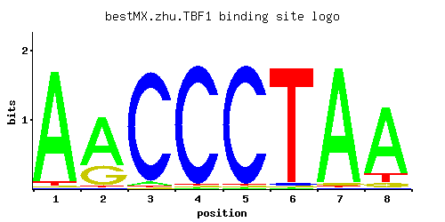

← All factors / TF RECORD
TBF1
YPL128C, LPI16
Telobox-containing general regulatory factor; binds to TTAGGG repeats within subtelomeric anti-silencing regions (STARs) and possibly throughout the genome and mediates their insulating capacity by blocking silent chromatin propagation
01 / RECOMMENDED MATRIX
Best-performing DNA-binding model.

Fisher’s P-valueNo data
Information content12.27
Max PWM score10.03
Recommended cutoff7.53
View and copy the recommended matrices ↘
Position frequency matrix (PFM)
A | 0.95 0.70 0.03 0.01 0.01 0.01 0.96 0.83 C | 0.01 0.01 0.95 0.97 0.97 0.02 0.01 0.01 G | 0.01 0.29 0.01 0.01 0.01 0.01 0.02 0.06 T | 0.03 0.01 0.01 0.01 0.01 0.96 0.01 0.10
Position count matrix (PCM)
A | 95 70 3 1 1 1 96 83 C | 1 1 95 97 97 2 1 1 G | 1 28 1 1 1 1 2 6 T | 3 1 1 1 1 96 1 10
Position weight matrix (PWM)
A | 1.09 0.78 -2.37 -3.47 -3.47 -3.47 1.10 0.95 C | -2.89 -2.89 1.66 1.68 1.68 -2.20 -2.89 -2.89 G | -2.89 0.48 -2.89 -2.89 -2.89 -2.89 -2.20 -1.10 T | -2.37 -3.47 -3.47 -3.47 -3.47 1.10 -3.47 -1.16
02 / COMPARATIVE BENCHMARKS
Alternative candidate matrices 2
Historical matrix candidates from the original ScerTF database. Expand a source to inspect its original logo, scores, and matrix values.
TBF1Badis et. al.P = No dataView matrix ↘
TBF1Zhao and StormoP = No dataView matrix ↘
03 / EXPERIMENTAL CONTEXT
Gene-level annotations and interactions.
Genes bound in ChIP-chip experiments 1 genes
No Data
Genes affected by TF deletion 1 genes
No Data
Genes supported by both experiments 1 genes
No Data
Predicted TF–TF partners 1 genes
TYE7